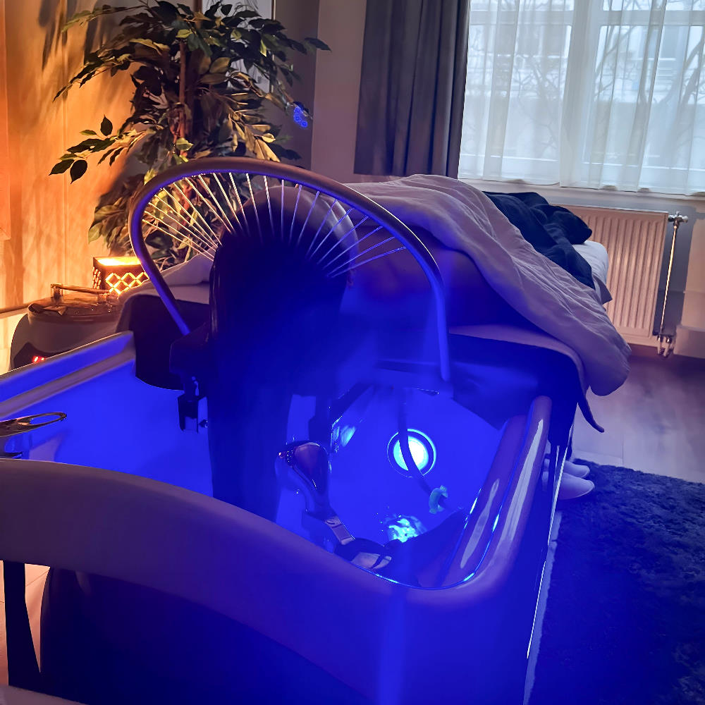
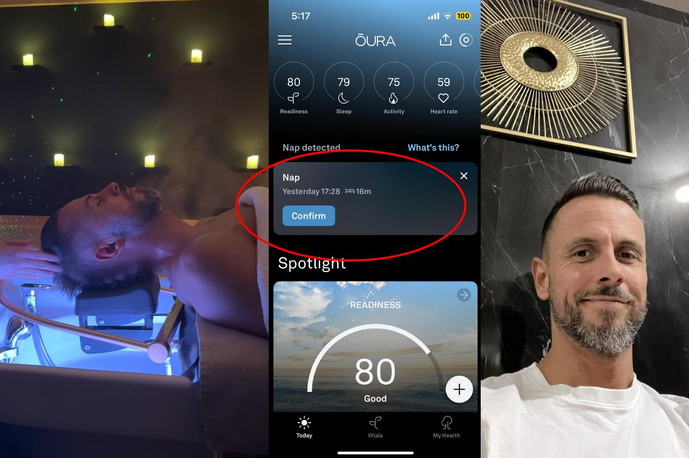
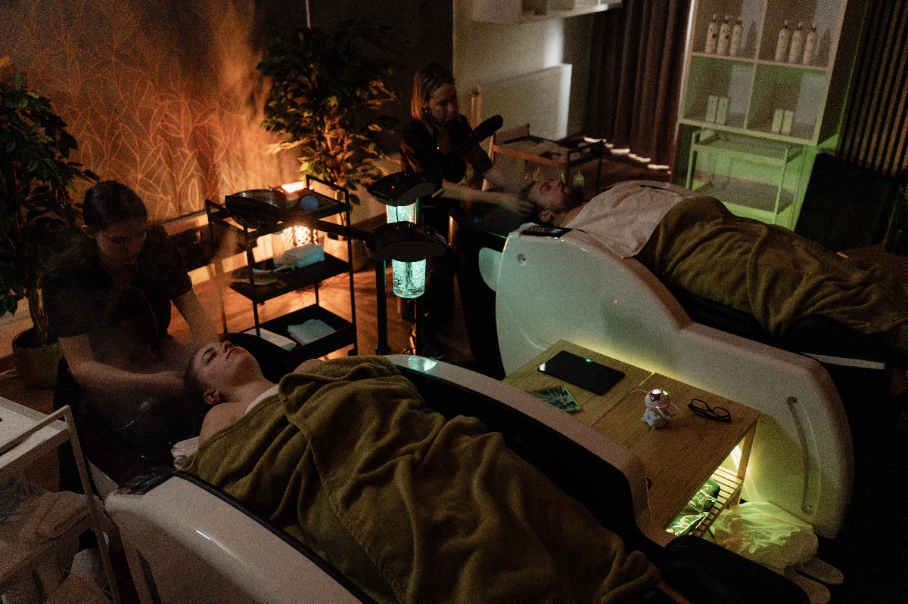

“Mielőtt a MOSAIC Head Spa-t létrehoztuk, több budapesti és külföldi Head Spa szalont teszteltük le, hogy a legjobb szolgáltatás jöhessen létre.” - Interjú Deák Ferenc Istvánnal a MOSAIC Head Spa Budapest alapítójával.
Mi az a Head Spa és honnan származik?
A Head Spa a legújabb női őrület, a trend amely még csak most érkezett meg Magyarországra, de már most töretlen népszerűségnek örvend a Hölgyek körében. De mi ez, és miért szeretik ennyire a nők?
A Head Spa vagy magyarosítva “fejfürdő” a hajápolás és a masszázs keveréke, amely kimondottan a fejet és annak környékét veszi célba, és azon túl, hogy elképesztően nyugtató és stresszoldó hatású, komoly hajápolási előnyei is vannak.
A social médiában egyre többet találkozhatunk az ikonikus aranyszínű félkör alakú fejzuhannyal, amely a Head Spa kezelés egyik alapját képezi.

A Head Spa jellegzetes szimbóluma és eszköze: A körvízsugaras "aranyglória."
Bár az alapja valóban egy mélytisztító és nagyon kellemes hajmosás, de annál sokkal többről van szó. Nem csak azért mert masszázs elemeket is tartalmaz, hanem azért mert olyan személyre szabott szeánszot jelent, amelyet semelyik fodrász szalonban nem kapunk meg.
A fejbőrtípusunk pontos meghatározása után egyedileg kikevert speciális pakolásokkal ápolják a fej- és arcbőrt, így a rendszeres Head Spa a leggyakoribb fejbőrproblémákra is jótékony hatással van.
“A korpás, száraz fejbőr hidratált lesz tőle, a zsíros haj faggyútermelése normalizálódik, a hajhullás pedig csökken, a hajhagymák egészsége javítható.
A személyre szabott nyugtató pakolásokat, gőzbúrával, és célzott arc-és fejbőrmasszázzsal juttatják a bőr mélyebb rétegeibe, az egészet pedig oxigénterápiával is megkoronázzák, ami alapjaiban javítja a hajhagymák tápanyagfelvételét.
A Head Spa japán eredetű, gyökere a shiatsu arcmasszázsra és az onsen fürdőkultúrára eredeztethető vissza, ezért azt lehet mondani, hogy a 3 fő eleme, a hajmosás, a gőzölés és a masszázs.
Mivel a fejben rengeteg receptor van, ezért egy Head Spa kezelés olyan szinten stresszoldó hatású, hogy még a legnyugtalanabb embereket is képes levinni alfába.
Alapítóként és férfiként én is megdöbbenve tapasztaltam, hogy az 50 perces Head Spa kezelésem 16 percét az okosgyűrűm alvásnak észlelte, miközben végig ébren voltam.

A Head Spa kezelés megnyugtatja a testet, lejjebb viszi a pulzust és beállítja a légzést. Nem csoda, hogy az okosgyűrűm azt hitte, hogy alszom a kezelés közben.
Miután több budapesti és külföldi szalont is végigjártunk egy dolgot biztosan megtudtunk:
A Head Spa egy privát, csendes feltöltődés, így az egész szalon környezetét ennek kell alárendelni.
A legtöbb szalonnal ellentétben így, külön szedtük a váróhelyiséget és a recepciót, de még más emeletre is helyeztük őket, így a MOSAIC-ban az emeleten csak a Head Spa zárt, tágas és privát kezelői helyezkednek el, ahol a csend, a halk zene és a fények mind a teljes kikapcsolódást és megérkezést szolgálják.
Az alapításkor a legfontosabb cél volt, hogy a MOSAIC Head Spa-ban vendégeinknek már a puszta jelenlét is megnyugvást hozzon.
A következő tanulság amit megtudtunk a piackutatásunkból az volt, hogy nagyon nem mindegy, hogy milyen szakember végzi a kezelést. Találkoztunk jó élményekkel is, de olyan szalon is volt, ahol nem éreztük az érintés igazi erejét. Ezért a MOSAIC Head Spa-ban csak olyan tapasztalt gyógymasszőröket alkalmazunk, akiknek az érintése is gyógyít, és akik elvégezték a hajgyógyászati alapkézést is, ami egy teljes értékű Head Spa kezeléshez kell. Fontosnak tartjuk, hogy a kezelőink hivatásként tekintsenek a munkájukra és szívvel lélekkel dolgozzanak, mert a masszőr hangulata átragad a vendégre. Vendégeink nagyon szeretik a kezeléseinket, mert a profi és gyengéd érintések eddig nem tapasztalt módon nyugtatják le őket.
A MOSAIC Head Spa-ban tapasztalt gyógymasszőrök végzik a kezelést, mert hiszünk abban, hogy az érintés gyógyít és ezt csak szakemberek tudják igazán profin végezni.
A harmadik dolog, amit máshogy csinálunk az a Head Spa szeánsz végén a hajszárítás. Profi, szalon szintű beszárítást kínálunk a végén, amitől az az érzése a vendégnek mintha most jött volna ki a fodrászától.
Kevesen tudják, de egy Head Spa kezelés egy fontos esemény, tárgyalás, fotózás, buli, vagy randi előtt is kiváló program, hiszen a felfrissülésen túl olyan frizurával távozhatunk, amilyet otthon kevesen tudnak beállítani.
Vendégeink kérhetnek egyenes, de akár hullámos szárítást is, így maga a záró “hajszárítás” felér egy komplett fodrászati finish szolgáltatással, amelyért sok fodrász szalonban 10-15.000 forintot is elkérnek beszárítás címén.
A MOSAIC Head Spa-ban a záró hajszárítást profi és jó fej fodrászok végzik.
A Head Spa kezelés alapvetően egy csendes és nyugodt énidő, a szárítás során viszont a “világba újra visszatérve” vendégeink nagyon szeretik fodrászaink társaságát, akik közvetlenek, kommunikatívak és nem csak tökéletes frizurát de jókedvet is varázsolnak 🙂
Egy MOSAIC Head Spa kezelés után nem fogod elhinni, hogy ez a haj haj a Tiéd. :)
A negyedik dolog, amit nagyon körbejártunk, azok a kezelés közben használt termékek. Mindenképpen 100%-ban természetes, kemikália- és állatkísérlet mentes és vegán termékeket szerettünk volna, hiszen a Head Spa alapja az egészség. A szép haj attól szép mert egészséges, és a test is akkor nyugodt, ha megkapja az érintést, ezért nem lehet elrontani a szolgáltatást szintetikus anyagokkal.
Az Oxygeni termékei mellett tettük le a voksunkat, amelyek a legmagasabb minőséget képviselik, kizárólag természetes összetevőkből készülnek és mindenféle kemikáliától mentesek.
Azon túl, hogy komoly fejbőr minőség változást tudunk elérni az Oxygeni egyedileg kikevert pakolásaival, de még a legérzékenyebb bőrű vendégeink és oda vannak tőle, hogy mennyire szereti a “bőrük” ezeket az illatos natúr krémeket.
Egy MOSAIC Head Spa szeánsz után így a haj csillogó, soha nem látott puhaságú és selymes lesz, ami egy nőnél komoly önbizalomlöketet tud adni. De férfiként még én napokig is éreztem a rövid hajamon a változást, és az illatfelhőt.
Az ötödik dolog pedig, amiben a MOSAIC Head Spa, más mint a többi budapesti Head Spa az az, hogy nálunk a vendégeknek lehetőségük van saját maguk összerakni egy headspa kezelést.
A MOSAIC 50 perces Kívánság csomag lényege ugyanis a személyre szabottság.
Ha eljössz hozzánk egy alap kezelésre több mint 10 féle kezelés elemmel fogsz találkozni: Hajmosás, gőzbúra, hajpakolás, arcpakolás, arcmasszázs eszközökkel és kézzel, fejmasszázs eszközökkel és kézzel, dekoltázs masszázs, és kézmasszázs.
Ezek közül biztos, hogy lesz 3-4 olyan kedvenc rész, amire azt mondod, hogy ezt órákig is el tudnád viselni. És itt van a lényeg! A következő alkalommal csak mondd el a MOSAIC masszőrödnek, melyikeket imádtad a legjobban és úgy fogjuk felépíteni a kezelésedet, hogy az a legtöbb örömet okozza neked.
A nevünk is innen ered: Mint a MOZAIK apró kis darabkáit, úgy tudod te is összerakni azt a Head Spa élményt, ami már annyira a tiéd, annyira neked való, hogy rendszeresen be szeretnéd majd építeni az életedbe.
Ez a MOSAIC lényege és esszenciája: Olyan szolgáltatást szeretnénk nyújtani, ami valóban rólad szól, mert a Head Spa átformáló és tartós hatását akkor tudod majd a leginkább élvezni, ha szokást csinálsz belőle.
De hogyan is néz ki pontosan egy kezelés, milyen elemekből áll? Nézzük meg most ezt:
Mennyibe kerül és hogy néz ki egy Head Spa kezelés a MOSAIC-ban?
Egy 50 perces MOSAIC "Hair" Head Spa kezelés egy mikokamerás fejbőrvizsgálattal kezdődik, amelynek során meghatározzuk a fejbőröd típusát és állapotát:
száraz / korpás,
zsíros,
hajhullós,
gyulladt.
Első lépésként egy speciális mikorkamerával mérjük fel a fejbőröd típusát és állapotát.
A kamerás vizsgálat fogja majd meghatározni, hogy hogyan épül fel a Head Spa kezelésed, illetve, hogy az Oxygeni natúr termékeiből, milyen egyedileg ott frissen kikevert mixet használunk majd a fej- és arcbőrödre, melyik táplálja leginkább azt. Egy száraz fejbőrt hidratálni kell, egy zsíros hajnál a faggyútermelés optimalizálása lesz a cél, míg a hajhullást erős mélytiszítással, vérkeringést serkentő masszázzsal és kiegészítő oxigénterápiával tudjuk javítani.
A kamerás vizsgálat után jön az ikonikus Head Spa aranyglória, azaz a körvízsugaras hajmosás, Oxygeni samponnal és mélytiszító fejmosással.
A megtisztított fejre és arcra visszük fel a haj- és arcpakolást, ezt gőzöléssel és különböző masszázstechnikákkal juttatjuk a bőr mélyebb rétegeibe, majd szabad kézzel és eszközökkel serkentjük a vérkeringést.
Már önmagában a lágy melegvizes hajmosás és a folyamatos gyengéd érintés, és az érzékszervek bevonása illatokkal, zenéve, fényekkel elképesztően nyugtató hatású, de itt még nincs vége.
Mindezt professzionális gyógymasszázs elemeket is tartalmazó arc- dekoltázs és kézmasszázzsal koronázzuk meg, hogy a stressz minden egyes nyomát kiűzzük a testből, hogy az 1 órás Head Spa szeánsz végére úgy kelj fel az ágyból mintha teljesen kicseréltek volna.
Az 50 perces MOSAIC Head Spa kezelés ára 29.900 Ft
Az 50 perces 4 kezes MOSAIC Head Spa kezelés ára 39.900 Ft
Az 50 perces PÁROS MOSAIC Head Spa kezelés ára: 53.800 Ft
Szalonunkban készpénzzel, bankkártyával és SZÉP kártyával is tudsz fizetni.
Felejsd el, amit eddig a masszázsról és hajápolásról tudtál! A MOSAIC Head Spa egy teljesen új szint, amit én is nehezen tudok szavakba önteni. Egy olyan magas szinten nyugtató és gyógyító kezelés, amitől a tested és a lelked nyugodt a hajad pedig egészségtől ragyogó lesz.
Alapítóként én magam minden héten járok, mert egyszerűen semmi mással nem tudom elérni ezt a hatást. Vállalkozó vagyok, és komoly életminőség és alvásminőség javulást értem el azzal, hogy hetente 1x megengedem magamnak ezt az 50 + 30 perc (szárítás) énidőt, amikor 3 ember csak velem foglalkozik.
Alapítóként komoly életminőség javulást értem el a rendszeres Head Spa-val.
A záró hajszárítás, pedig külön helyiségben profi fodrászok által történik. A szárítás árát már tartalmazza a kezelés és plusz 30 percet vesz igénybe, tehát egy 50 perces MOSAIC Head Spa kezelés valójában 50+30 perces feltöltődést jelent.
Milyen pozitív hatásai vannak a Head Spa-nak?
Az első és legfontosabb amit érezni fogsz egy 50 perces MOSAIC Head Spa kezelés után az az, hogy a tested és a lelked megnyugszik, a szorongásod eltűnik, a pulzusod és a légzésed normalizálódik, egyfajta béke száll meg, amiből még órákig nem lehet majd kibillenteni.
Ha 1 szóban akarnám megfogalmazni, hogy milyen érzés egy Head Spa kezelés, akkor hadd idézzek egyik kedves vendégünktől 👇
Nézd meg a videót hanggal, mert nem lehet szavakba önteni, hogy milyen érzés a MOSAIC Head Spa szeánsz.
A meleg víz, a csend, a zene, a gyógyító érintés, az érzékszervek változatos ingerlése és a fej receptorainak kényeztetése teljesen levisz alfába.
A következő dolog, ami vendégeinket szó szerint lesokkolja, az az, amit a hajszárítás után a tükörben látnak. Hihetetlen mekkora hajminőség javulást lehet elérni már 1 Head Spa kezeléstől is.
A stressz nem csak lelkileg megterhelő, de a hajat is károsítja és a Head Spa mind a kettőt egyszerre kezeli. Segít visszatalálni önmagunkhoz. A békét nem elérni kell, az mindig benned van. Olyan mint a nap a felhők fölött. De visszatalálni hozzá nem könnyű. Ebben segít a MOSAIC Head Spa.
A rendszeres Head Spa kezelés pedig azon túl, hogy egyre inkább hozzájárul a tartós nyugalom és harmonikus életműködés eléréshez, a leggyakoribb fejbőrproblémákra is intenzív hatással van.👇
✔️ Mélyen tisztítja a fejbőrt, eltávolítja a felesleges faggyút és lerakódásokat.
✔️ Kiegyensúlyozza a faggyútermelést, így csökken a gyors zsírosodás.
✔️ Megnyugtatja a fejbőrt, csökkenti az irritációt és a gyulladást.
✔️ Friss, tiszta érzetet biztosít, hosszabb ideig marad üde a haj.
✔️ Nem szárítja ki a fejbőrt, így elkerülhető a túlzott faggyútermelés visszatérése.
Száraz fejbőr esetén
✔️ Intenzíven hidratálja és táplálja a fejbőrt természetes összetevőkkel.
✔️ Enyhíti a viszketést és a hámlást, megszünteti a kellemetlen feszülő érzést.
✔️ Segít helyreállítani a fejbőr természetes védőrétegét.
✔️ Csökkenti a korpásodást és a szárazság okozta irritációt.
✔️ A haj puhább, rugalmasabb és egészségesebb kinézetű lesz.
Hajhullás esetén
✔️ Serkenti a fejbőr vérkeringését, így több oxigén és tápanyag jut a hajhagymákhoz.
✔️ Erősíti a hajhagymákat, csökkenti a túlzott hajhullást.
✔️ Mélyen tisztítja a fejbőrt, eltávolítja a haj növekedését gátló méreganyagokat.
✔️ Segít aktiválni az új hajszálak növekedését, dúsabbá és élettel telivé varázsolja a frizurát.
✔️ Stresszoldó hatása révén csökkenti a hajhullás egyik leggyakoribb kiváltó okát.
Kinek ajánlott a Head Spa?
Mindenkinek kötelező, akinek a hétköznapjait a stressz határozza meg és nem tud igazán töltődni. Kimondottan ajánlom férfiaknak, hiszen mi még többet is stresszelünk.
A MOSAIC megalapításával egyébként kitűzött célunk volt az is, hogy a szalon ne legyen túl “csajos” így a férfiak is komfortosan érezhetik magukat. :) Tudom, hogy nekünk milyen nehéz időt szánni magunkra, és ha szánunk is akkor nem a Head Spa az első gondolatunk, de férfi olvasóim elhihetik: A MOSAIC headspa-ban nem a púderfelhőről szól minden, így igazán otthonos közeg lehet az erősebb nem számára is.
Kopasz férfiaknak kétszeresen is ajánlom, hiszen a haj nélküli fejbőr sokkal érzékenyebb, ezért ők dupla akkor élvezeti értéket tudnak kienni a MOSAIC Head Spa szeánszaiból. Mondjuk a hajszárítás kihagyható 🙂
Ezen kívül a Head Spa-t kimondottan fogja élvezni az aki szereti, ha a fejét, haját “birizgálják.” Ha olyan vagy mint én, hogy a fodrásznál fizetnél is azért, hogy a hajmosás ne csak 2 percig tartson, akkor a Head Spa-ra rá fogsz szokni. Borzongató és egyben megnyugtató élmény, amihez jelenleg nem tudok hasonlót.
Vendégeink igen nagy százaléka olyan háziasszonyokból és anyukákból áll, akiknek egész nap helyt kell állniuk és nem marad idejük magukra. Sok esetben a párjuktól kapják a kezelést ajándékba és teljesen kicserélve mennek haza.
Vállalkozóknak, felsővezetőknek, elfoglalt üzletembereknek is kötelező szeánsz. A hetet egy Head Spa-val indítani a legjobb befektetés amit magadért tehetsz: Kisimultan, tiszta fejjel és nyugodtan nem csak a kihívásokat fogod könnyebben venni, de jobb döntéseket is hozol majd.
Pároknak pedig nem létezik ennél jobb élményajándék. Eleve együtt átélni egy ilyen kényeztetést már láthatatlan módon erősíti a kapcsolatot 2 ember között. De egy páros Head Spa után még órákig lesz közös beszédtéma az, hogy kinek melyik volt a kedvenc része, és őszintén: Mi többet és személyesebbet ajándékozhatnál szerelmednek, mint a legjobb, legkipihentebb és szeretetteljesebb önmagadat? 🙂

Ha egy igazi élményt szeretnétek együtt átélni, akkor próbáljátok ki a MOSAIC Páros Head Spa kezelését!
Hol van a MOSAIC Head Spa Budapesten és hogy lehet bejutni?
A MOSAIC Head Spa 270 m2-es exkluzív szalonja Budán található a 2. és 3. kerület határán a Kolosy térhez közel.
A pontos címünk: 1023 Budapest, Bécsi út 2.
Auóval érdemes rögtön a Bécsi út 11-et beírnod a navi-ba mert ott van egy zárt parkoló, és innen a MOSAIC csak 2 perc, gyalog.
A legegyszerűbb ha online foglalsz időpontot hozzánk, itt a naptárban már látod is a szabad helyeket:
De ha nem te jönnél, hanem megajándékoznád a szerettedet egy ilyen fajta személyes törődéssel, akkor ajándékkártyát is tudsz nálunk vásárolni, személyesen a szalonban, vagy akár online is
Azt mondom, hogy aki teheti annak érdemes hetente, mert így lehet a hajápoló- és stresszoldó hatást folyamatosan fenntartani.
Természetesen a havi / 2-3 havi headspa kezelésnek is rengeteg pozitív hatása van, ezt mindenkinek saját magának kell eldöntenie.
Azok akik valamilyen hajproblémával rendelkeznek - itt nem a komolyabb hajgyógyászati kategóriákra gondolok, tehát seborrhea, pikkelysömör, gyulladások - nekik érdemes lehet az első 3-5 alkalmat “kúraszerűen” kicsit jobban besűríteni, utána pedig elég lehet 1-2-3 havonta ismételni a szeánszot.
Bárhogy is dönt valaki, mi a maximális támogatást szeretnénk nyújtani annak, aki méltónak találja a MOSAIC Headspa-t arra, hogy rendszeresen válassza. Így elérhető nálunk:
És minden vendégüknek automatikusan jár egy elköteleződés nélküli hűségkártya, amellyel minden 5. headspa alkalom féláron van.
Egy 10 alkalmas bérlet, amelyhez 2 alkalom ajándék, vagy máshogy fogalmazva 20% kedvezményt biztosít.
Illetve az országban mi vezettük be először a havi díjas Headspa előfizetést, amely 10% kedvezmény mellett havi 1 alkalmat biztosít, amelyet akár el is ajándékozhatunk.
Mindenesetre az én személyes tanácsom neked Kedves Olvasó az az, hogy gyere el egy alap 60 perces Headspa kezelésre és:
érezd meg milyen hatással van a testedre, a lelkedre és a hajadra,
és tapasztald meg, hogy melyik részek a kedvenceid a kezelés közben,
Majd gyere el hozzánk újra második alkalommal egy Kívánság headspa kezelésre és rakd össze te, hogy milyen legyen az álom headspa kezelésed!
Ez az élmény már biztosan 100%-ban olyan lesz, ami neked való és a legnagyobb kényeztetést okozza, és majd érezni fogod, hogy mikor hiányzik a testednek / lelkednek ez az újabb feltöltődés.
Köszönöm, hogy elolvastad a cikket.
Szeretettel és személyesen hívlak meg a MOSAIC-ba, Budapest legnagyobb Headspa szalonjába és ígérem neked, hogy olyan élményben lesz részed, amit nem fogsz egyhamar elfelejteni :)
Barátsággal: Deák Ferenc István A MOSAIC Headspa alapítója